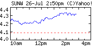

<!DOCTYPE html PUBLIC "-//W3C//DTD XHTML 1.0 Strict//EN" "http://www.w3.org/TR/xhtml1/DTD/xhtml1-strict.dtd">
<html xmlns="http://www.w3.org/1999/xhtml" xml:lang="en" lang="en"><head><title>Unix Admin Corner: Grub on a stick</title>


  

  <meta http-equiv="Content-Type" content="text/html; charset=UTF-8">
<meta name="MSSmartTagsPreventParsing" content="true">
<meta name="generator" content="Blogger">
<link rel="alternate" type="application/atom+xml" title="Unix Admin Corner (Atom 0.3)" href="http://uadmin.blogspot.com/atom.xml">
<link rel="alternate" type="application/rss+xml" title="Unix Admin Corner (RSS 2.0)" href="http://uadmin.blogspot.com/rss.xml">
<link rel="service.post" type="application/atom+xml" title="Unix Admin Corner" href="https://www.blogger.com/atom/9748218">
<link rel="service.post" type="application/atom+xml" title="Unix Admin Corner (Atom 1.0)" href="http://www.blogger.com/feeds/9748218/posts/full">

<link rel="EditURI" type="application/rsd+xml" title="RSD" href="http://www.blogger.com/rsd.g?blogID=9748218">
<style type="text/css">
@import url("http://www.blogger.com/css/blog_controls.css");
@import url("http://www.blogger.com/dyn-css/authorization.css?blogID=9748218");
</style>


  <style type="text/css">
/*
-----------------------------------------------
Blogger Template Style
Name:     Minima Ochre
Designer: Douglas Bowman
URL:      www.stopdesign.com
Date:     28 Feb 2004
----------------------------------------------- */


body {
  background:#e1d4c1;
  margin:0;
  padding:40px 20px;
  font:x-small Georgia,Serif;
  text-align:center;
  color:#333;
  font-size/* */:/**/small;
  font-size: /**/small;
  }
a:link {
  color:#ff6600;
  text-decoration:none;
  }
a:visited {
  color:#996;
  text-decoration:none;
  }
a:hover {
  color:#c60;
  text-decoration:underline;
  }
a img {
  border-width:0;
  }


/* Header
----------------------------------------------- */
#google {
  width:728px;
  margin:0 auto 10px;
  }
  

#header {
  width:660px;
  margin:0 auto 10px;
  border:1px solid #ffc;
  }
#blog-title {
  margin:5px 5px 0;
  padding:20px 20px .25em;
  border:1px solid #ee9;
  border-width:1px 1px 0;
  font-size:200%;
  line-height:1.2em;

  font-weight:normal;
  color:#874;
  text-transform:uppercase;
  letter-spacing:.2em;
  }
#blog-title a {
  color:#874;
  text-decoration:none;
  }
#blog-title a:hover {
  color:#c60;
  }
#description {
  margin:0 5px 5px;
  padding:0 20px 20px;
  border:1px solid #ee9;
  border-width:0 1px 1px;
  max-width:700px;
  font:78%/1.4em "Trebuchet MS",Trebuchet,Arial,Verdana,Sans-serif;
  text-transform:uppercase;
  letter-spacing:.2em;
  color:#a83;
  }


/* Content
----------------------------------------------- */
#content {
  width:660px;
  margin:0 auto;
  padding:0;
  text-align:left;
  }
#main {
  width:410px;
  float:left;
  }
#sidebar {
  width:220px;
  float:right;
  color:#863;
  }


/* Headings
----------------------------------------------- */
h2 {
  margin:1.5em 0 .75em;
  font:78%/1.4em "Trebuchet MS",Trebuchet,Arial,Verdana,Sans-serif;
  text-transform:uppercase;
  letter-spacing:.2em;
  color:#774;
  }


/* Posts
----------------------------------------------- */
.date-header {
  margin:1.5em 0 .5em;
  }
.post {
  margin:.5em 0 1.5em;
  border-bottom:1px dotted #fff;
  padding-bottom:1.5em;
  }
.post-title {
  margin:.25em 0 0;
  padding:0 0 4px;
  font-size:140%;
  font-weight:normal;
  line-height:1.4em;
  color:#c80;
  }
.post a {
  font-weight:bold;
  }
.post-title a, .post-title a:visited, .post-title strong {
  display:block;
  text-decoration:none;
  color:#b70;
  font-weight:normal;
  }
.post-title strong, .post-title a:hover {
  color:#333;
  }
.post div {
  margin:0 0 .75em;
  line-height:1.6em;
  }
p.post-footer {
  margin:-.25em 0 0;
  color:#a85;
  }
.post-footer em, .comment-link {
  font:78%/1.4em "Trebuchet MS",Trebuchet,Arial,Verdana,Sans-serif;
  text-transform:uppercase;
  letter-spacing:.1em;
  }
.post-footer em {
  font-style:normal;
  color:#863;
  margin-right:.6em;
  }
.comment-link {
  margin-left:.6em;
  }
.post img {
  padding:4px;
  border:1px solid #ddd;
  }
.post blockquote {
  margin:1em 20px;
  }
.post blockquote p {
  margin:.75em 0;
  }


/* Comments
----------------------------------------------- */
#comments h4 {
  margin:1em 0;
  font:bold 78%/1.6em "Trebuchet MS",Trebuchet,Arial,Verdana,Sans-serif;
  text-transform:uppercase;
  letter-spacing:.2em;
  color:#774;
  }
#comments h4 strong {
  font-size:130%;
  }
#comments-block {
  margin:1em 0 1.5em;
  line-height:1.6em;
  }
#comments-block dt {
  margin:.5em 0;
  }
#comments-block dd {
  margin:.25em 0 0;
  }
#comments-block dd.comment-timestamp {
  margin:-.25em 0 2em;
  font:78%/1.4em "Trebuchet MS",Trebuchet,Arial,Verdana,Sans-serif;
  text-transform:uppercase;
  letter-spacing:.1em;
  }
#comments-block dd p {
  margin:0 0 .75em;
  }
.deleted-comment {
  font-style:italic;
  color:gray;
  }


/* Sidebar Content
----------------------------------------------- */
#sidebar ul {
  margin:0 0 1.5em;
  padding:0 0 1.5em;
  border-bottom:1px dotted #fff;
  list-style:none;
  }
#sidebar li {
  margin:0;
  padding:0 0 .25em 15px;
  text-indent:-15px;
  line-height:1.5em;
  }
#sidebar p {
  line-height:1.5em;
  }


/* Profile
----------------------------------------------- */
#profile-container {
  margin:0 0 1.5em;
  border-bottom:1px dotted #fff;
  padding-bottom:1.5em;
  }
.profile-datablock {
  margin:.5em 0 .5em;
  }
.profile-img {
  display:inline;
  }
.profile-img img {
  float:left;
  padding:4px;
  border:1px solid #ffc;
  margin:0 8px 3px 0;
  }
.profile-data {
  margin:0;
  font:bold 78%/1.6em "Trebuchet MS",Trebuchet,Arial,Verdana,Sans-serif;
  text-transform:uppercase;
  letter-spacing:.1em;
  color:#763;


  }
.profile-data strong {
  display:none;
  }
.profile-textblock {
  margin:0 0 .5em;
  }
.profile-link {
  margin:0;
  font:78%/1.4em "Trebuchet MS",Trebuchet,Arial,Verdana,Sans-serif;
  text-transform:uppercase;
  letter-spacing:.1em;
  }


/* Footer
----------------------------------------------- */
#footer {
  width:660px;
  clear:both;
  margin:0 auto;
  }
#footer hr {
  display:none;
  }
#footer p {
  margin:0;
  padding-top:15px;
  font:78%/1.6em "Trebuchet MS",Trebuchet,Verdana,Sans-serif;
  text-transform:uppercase;
  letter-spacing:.1em;
  }

/* my style codes */
.StyleBold
	{color:#993300;
	font-weight:bold;}
.CODE
	{background:#B77927;
	font-size:8.0pt;
	font-family:"Courier New";}
.CODECxSpMiddle
	{background:#B77927;
	font-size:8.0pt;
	font-family:"Courier New";}
.Section1
	{page:Section1;}
</style><!-- -->

<style type="text/css">@import url(http://www.blogger.com/css/navbar/main.css);
@import url(http://www.blogger.com/css/navbar/1.css);
div.b-mobile {display:none;}
</style>

<script type="text/javascript" src="grub-on-stick_files/cookies.js"> </script><meta http-equiv="Content-Type" content="text/html; charset=iso-8859-1"></head><body leftmargin="0" topmargin="0" marginheight="0" marginwidth="0"><!-- --><div id="flagi" style="visibility: hidden; position: absolute;" onmouseover="showDrop()" onmouseout="hideDrop()"><div id="flagtop"></div><div id="top-filler"></div><div id="flagi-body">Notify Blogger about objectionable content.<br><a href="http://help.blogger.com/bin/answer.py?answer=1200"> What does this mean? </a> </div></div><div id="b-navbar"><a href="http://www.blogger.com/" id="b-logo" title="Go to Blogger.com"></a><div id="b-sms" class="b-mobile"><a href="sms:?body=Hi%2C%20check%20out%20Unix%20Admin%20Corner%20at%20uadmin.blogspot.com">Send As SMS</a></div><form id="b-search" name="b-search" action="http://search.blogger.com/"><div id="b-more"><a href="http://www.blogger.com/" id="b-getorpost"></a><a id="flagButton" style="display: inline;" href="javascript:toggleFlag();" onmouseover="showDrop()" onmouseout="hideDrop()"></a><a href="http://www.blogger.com/redirect/next_blog.pyra?navBar=true" id="b-next"></a></div><div id="b-this"><input id="b-query" name="as_q" type="text"><input name="ie" value="UTF-8" type="hidden"><input name="ui" value="blg" type="hidden"><input name="bl_url" value="uadmin.blogspot.com" type="hidden"><input src="grub-on-stick_files/btn_search_this.gif" alt="Search This Blog" id="b-searchbtn" title="Search this blog with Google Blog Search" onclick="document.forms['b-search'].bl_url.value='uadmin.blogspot.com'" type="image"><input src="grub-on-stick_files/btn_search_all.gif" alt="Search All Blogs" value="Search" id="b-searchallbtn" title="Search all blogs with Google Blog Search" onclick="document.forms['b-search'].bl_url.value=''" type="image"><a href="javascript:BlogThis();" id="b-blogthis">BlogThis!</a></div></form></div><script type="text/javascript"><!--

var ID = 9748218;var HATE_INTERSTITIAL_COOKIE_NAME = 'dismissedInterstitial';var FLAG_COOKIE_NAME = 'flaggedBlog';var FLAG_BLOG_URL = 'http://www.blogger.com/flag-blog.g?nav=1&toFlag=' + ID;var UNFLAG_BLOG_URL = 'http://www.blogger.com/unflag-blog.g?nav=1&toFlag=' + ID;var FLAG_IMAGE_URL = 'http://www.blogger.com/img/navbar/1/flag.gif';var UNFLAG_IMAGE_URL = 'http://www.blogger.com/img/navbar/1/unflag.gif';var ncHasFlagged = false;var servletTarget = new Image();

function BlogThis() {Q='';x=document;y=window;if(x.selection) {Q=x.selection.createRange().text;} else if (y.getSelection) { Q=y.getSelection();} else if (x.getSelection) { Q=x.getSelection();}popw = y.open('http://www.blogger.com/blog_this.pyra?t=' + escape(Q) + '&u=' + escape(location.href) + '&n=' + escape(document.title),'bloggerForm','scrollbars=no,width=475,height=300,top=175,left=75,status=yes,resizable=yes');void(0);}

function blogspotInit() {initFlag();}

function hasFlagged() {return getCookie(FLAG_COOKIE_NAME) || ncHasFlagged;}

function toggleFlag() {var date = new Date();var id = 9748218;if (hasFlagged()) {removeCookie(FLAG_COOKIE_NAME);servletTarget.src = UNFLAG_BLOG_URL + '&d=' + date.getTime();document.images['flag'].src = FLAG_IMAGE_URL;ncHasFlagged = false;} else { setBlogspotCookie(FLAG_COOKIE_NAME, 'true');servletTarget.src = FLAG_BLOG_URL + '&d=' + date.getTime();document.images['flag'].src = UNFLAG_IMAGE_URL;ncHasFlagged = true;}}

function initFlag() {document.getElementById('flagButton').style.display = 'inline';if (hasFlagged()) {document.images['flag'].src = UNFLAG_IMAGE_URL;} else {document.images['flag'].src = FLAG_IMAGE_URL;}}

function showDrop() {if (!hasFlagged()) {document.getElementById('flagi').style.visibility = 'visible';}}

function hideDrop() {document.getElementById('flagi').style.visibility = 'hidden';}

function setBlogspotCookie(name, val) {var expire = new Date((new Date()).getTime() + 5 * 24 * 60 * 60 * 1000);var path = '/';setCookie(name, val, null, expire, path, null);}

function removeCookie(name){var expire = new Date((new Date()).getTime() - 1000); setCookie(name,'',null,expire,'/',null);}

 --></script><script type="text/javascript">  blogspotInit();</script><div id="space-for-ie"></div>
<div id="google"><p><br><br></p><script type="text/javascript"><!--  
google_ad_client = "pub-7362289193524899";
google_ad_width = 728;
google_ad_height = 90;
google_ad_format = "728x90_as";
google_ad_channel ="";
google_color_border = "cc8800";
google_color_bg = "e1d4c1";
google_color_link = "00008B";
google_color_url = "00008B";
google_color_text = "000000";
//--></script>
<script type="text/javascript" src="grub-on-stick_files/show_ads.js">
</script><iframe name="google_ads_frame" src="grub-on-stick_files/ads.htm" marginwidth="0" marginheight="0" vspace="0" hspace="0" allowtransparency="true" frameborder="0" height="90" scrolling="no" width="728"></iframe>
All proceeds from Ad Clicks goes to the author of this site. 
</div>
<div id="header">
  <h1 id="blog-title">
    <a href="http://uadmin.blogspot.com/">
	Unix Admin Corner
	</a>
  </h1>
  <p id="description">Random thoughts, on Solaris, Linux, IRIX and gasp even the occasional Windows tidbit may weasel its way in. </p>

</div>
  <p><!--This is an optional footer. If you want text here, place it inside these tags, and remove this comment. -->&nbsp;</p>

<!-- Begin #content -->
<div id="content">
<!-- Begin #main -->
<div id="main"><div id="main2">


    
  <h2 class="date-header">Wednesday, November 02, 2005</h2>
  

  
     
  <!-- Begin .post -->
  <div class="post"><a name="113096254579960196"></a>
         
    <h3 class="post-title">
	 
	 Grub on a stick
	 
    </h3>
    

	         <div class="post-body">
	<div>
      <div style="clear: both;"></div>This
was posted on the OpenSolaris discuss list, it explains how to install
grub on a usb stick in Solaris, figure I would archive it here so I can
find it later when I need it, also it may help someone else who knows….
<br><br><pre><br><br>---------- Forwarded message ----------<br>From: Magnus Forsberg <hidden@hidden><br>To: opensolaris-discuss@HIDDEN<br>Date: Wed, 24 Aug 2005 07:22:16 -0700 (PDT)<br>Subject: [osol-discuss] HOWTO: Installing GRUB on USB stick<br>Installing GRUB on USB stick<br>--------------------------------<br></hidden@hidden></pre><br>tested on Solaris Express Community Release b20<br><br>I
wrote this guide for installing GRUB on my USB stick. Maybe someone
will find it useful. Comments or suggestions for improvement are
welcome.<br><br>The following steps will install GRUB on a USB stick.
If the USB stick is inserted the GRUB menu will appear, if not XP will
boot automatically. Remember to configure your BIOS to boot from USB.<br><br>Stop Volume Management<br>----------------------<br># svcadm disable -t system/filesystem/volfs<br><br>Find USB stick paths<br>--------------------<br># rmformat<br>...<br>    2. Logical Node: /dev/rdsk/c2t0d0p0<br>       Physical Node: /pci@0,0/pci1014,52e@1d,7/storage@4/disk@0,0<br>       Connected Device: SanDisk  Cruzer Micro     0.2<br>       Device Type: Removable<br>       Bus: USB<br>       Size: 977.5 MB<br>       Label: <none><br>       Access permissions:<br>...<br><br>Create partitions on USB stick<br>------------------------------<br># fdisk /dev/rdsk/c2t0d0p0<br>                                              Cylinders<br>     Partition   Status    Type          Start   End   Length    %<br>     =========   ======    ============  =====   ===   ======   ===<br>         1       Active    Solaris2          1    97      97     10<br>         2                 Win95 FAT32      98   976     879     90<br><br>Create FAT-32 filesystem on USB partition 2<br>-------------------------------------------<br># mkfs -F pcfs -o fat=32 /dev/rdsk/c2t0d0p0:c<br>Construct a new FAT file system on /dev/rdsk/c2t0d0p0:c: (y/n)? y<br><br>Create slice for /boot<br>----------------------<br># format -e<br>      1. c2t0d0 <default cyl="" 46="" alt="" 2="" hd="" 64="" sec="" 32=""><br>         /pci@0,0/pci1014,52e@1d,7/storage@4/disk@0,0<br>...<br>Part      Tag    Flag     Cylinders      Size            Blocks<br> 0       root    wm       1 - 94       94.00MB    (94/0/0) 192512<br>...<br><br>Create UFS filesystem on /boot slice<br>------------------------------------<br># newfs -v /dev/rdsk/c2t0d0s0<br><br>Install Master Boot program (is this step actually needed)?<br>-----------------------------------------------------------<br># fdisk -b /usr/lib/fs/ufs/mboot -n /dev/rdsk/c2t0d0p0<br><br>Install GRUB on USB stick<br>-------------------------<br>bash-3.00# installgrub -m /boot/grub/stage1 /boot/grub/stage2 /dev/rdsk/c2t0d0s0<br>Updating master boot sector destroys existing boot managers (if any).<br>continue (y/n)?y<br>stage1 written to partition 0 sector 0 (abs 2048)<br>stage2 written to to partition 0, 228 sectors starting 50 (abs 2098)<br>stage1 written to master boot sector<br><br>Create GRUB boot directories<br>-----------------------------<br># mount /dev/rdsk/c2t0d0s0 /mnt/usb<br># mkdir -p /mnt/usb/boot/grub<br><br>Copy GRUB files to USB stick<br>----------------------------<br># cd /boot/grub<br># find . -print -depth | cpio -pdumv /mnt/usb/boot/grub<br><br>Mounting the FAT-32 partition<br>-----------------------------<br># mount -F pcfs /dev/dsk/c2t0d0p2 /mnt/fat<br><br>Laptop internal HDD Dual Boot partitioning<br>------------------------------------------<br>     Partition   Status    Type          Start   End   Length    %<br>     =========   ======    ============  =====   ===   ======   ===<br>         1       Active    IFS: NTFS         0  13004    13005     34 (windows xp)<br>         2                 Solaris2       13005  18084    5080     13 (main solaris 11)<br>         3                 Win95 FAT32    18085  18859     775      2 (shared storage)<br><br>Update GRUB boot menu (hd1 is internal HDD0 where Solaris is installed)<br>-----------------------------------------------------------------------<br># cat /mnt/usb/boot/grub/menu.lst<br>...<br>title Solaris 11<br>root (hd1,1,a)<br>kernel /platform/i86pc/multiboot<br>module /platform/i86pc/boot_archive<br>...<br>title Windows XP Professional<br>rootnoverify (hd1,0)<br>map (hd0) (hd1)<br>map (hd1) (hd0)<br>makeactive<br>chainloader +1<br>...</default></none><div style="clear: both; padding-bottom: 0.25em;"></div>
    </div>
    </div>
    
    <p class="post-footer">
      <em>posted by jamesd_wi at <a href="http://uadmin.blogspot.com/2005/11/grub-on-stick.html" title="permanent link">Wednesday, November 02, 2005</a></em>
        <span class="item-action"><a href="http://www.blogger.com/email-post.g?blogID=9748218&amp;postID=113096254579960196" title="Email Post"><span class="email-post-icon">&nbsp;</span></a></span><span class="item-control admin-551869843 pid-1224221865"><a style="border: medium none ;" href="http://www.blogger.com/post-edit.g?blogID=9748218&amp;postID=113096254579960196&amp;quickEdit=true" title="Edit Post"><span class="quick-edit-icon">&nbsp;</span></a></span>
    </p>
  
  </div>
  <!-- End .post -->
  
  
  
  <!-- Begin #comments -->
 
  <div id="comments">

	<a name="comments"></a>
        <h4>0 Comments:</h4>
        <dl id="comments-block">
      
    </dl>
		<p class="comment-timestamp">

    <a class="comment-link" href="http://www.blogger.com/comment.g?blogID=9748218&amp;postID=113096254579960196">Post a Comment</a>
    </p>
    
		<p class="comment-timestamp">
	<a href="http://uadmin.blogspot.com/">&lt;&lt; Home</a>
    </p>
    </div>


  <!-- End #comments -->


</div></div>
<!-- End #main -->


<!-- Begin #sidebar -->
<div id="sidebar"><div id="sidebar2">
 
  <!-- Begin #profile-container -->
    
               <div id="profile-container"> <h2 class="sidebar-title">About Me</h2> <dl class="profile-datablock">    <dd class="profile-data"> <strong>Name:</strong>James Dickens </dd>  <dd class="profile-data"> <strong>Location:</strong>Milwaukee, Wisconsin, United States </dd>  </dl>  <p class="profile-textblock">
I'm a long time computer consultant, that has the current role of
system administrator. I have been Doing interesting things with
computers since 1984. I have 3 kids, and an awesome wife. </p>  <p class="profile-link"> <a href="http://www.blogger.com/profile/5930582">View my complete profile</a> </p> </div>  
<!-- SiteSearch Google -->
<h2 class="sidebar-title">Site Search</h2><ul id="sitesearch">
<form method="get" action="http://www.google.com/custom" target="_top">
<table bgcolor="#e1d4c1" border="0">
<tbody><tr><td align="left" height="32" nowrap="nowrap" valign="top">
<a href="http://www.google.com/">
</a>
<br>
<input name="domains" value="uadmin.blogspot.com" type="hidden">
<input name="q" size="31" maxlength="255" value="" type="text">
</td></tr>
<tr>
<td nowrap="nowrap">
<table>
<tbody><tr>
<td>
<input name="sitesearch" value="" checked="checked" type="radio">
<font color="#000000" size="-1">Web</font>
</td>
<td>
<input name="sitesearch" value="uadmin.blogspot.com" type="radio">
<font color="#000000" size="-1">uadmin.blogspot.com</font>
</td>
</tr>
</tbody></table>
<input name="sa" value="Search" type="submit">
<input name="client" value="pub-7362289193524899" type="hidden">
<input name="forid" value="1" type="hidden">
<input name="ie" value="ISO-8859-1" type="hidden">
<input name="oe" value="ISO-8859-1" type="hidden">
<input name="cof" value="GALT:#333333;GL:1;DIV:#37352E;VLC:000000;AH:center;BGC:C6B396;LBGC:8E866F;ALC:000000;LC:000000;T:44423A;GFNT:663333;GIMP:663333;FORID:1;" type="hidden">
<input name="hl" value="en" type="hidden">
</td></tr></tbody></table>
</form>
</ul>
<!-- SiteSearch Google -->
<h2 class="sidebar-title">Quick Links</h2><ul id="friends">
    <li><a href="http://uadmin.blogspot.com/2005/03/solaris-links.html">Solaris</a></li>
    <li><a href="http://uadmin.blogspot.com/2005/03/dtrace-links.html">DTrace</a></li>
    <li><a href="http://uadmin.blogspot.com/2005/03/zones-links.html">Zones</a></li>
    <li><a href="http://uadmin.blogspot.com/2006/05/zfs-links.html">ZFS</a></li>
    <li><a href="http://uadmin.blogspot.com/2005/09/systemtap-links.html">Systemtap</a></li>
</ul>

<h2 class="sidebar-title">Contact Info</h2><ul id="contact">
    Email: jamesd.wi AT gmail.com
    Cell: 414-758-9229<br \="">
    Availible for Consulting<br \="">
    or Job Oportunities. 
</ul>
<ul id="donations">
<form action="https://www.paypal.com/cgi-bin/webscr" method="post">
<input name="cmd" value="_s-xclick" type="hidden">
<input src="grub-on-stick_files/x-click-but21.gif" name="submit" alt="Make payments with PayPal - it's fast, free and secure!" border="0" type="image">
<input name="encrypted" value="-----BEGIN PKCS7-----MIIHFgYJKoZIhvcNAQcEoIIHBzCCBwMCAQExggEwMIIBLAIBADCBlDCBjjELMAkGA1UEBhMCVVMxCzAJBgNVBAgTAkNBMRYwFAYDVQQHEw1Nb3VudGFpbiBWaWV3MRQwEgYDVQQKEwtQYXlQYWwgSW5jLjETMBEGA1UECxQKbGl2ZV9jZXJ0czERMA8GA1UEAxQIbGl2ZV9hcGkxHDAaBgkqhkiG9w0BCQEWDXJlQHBheXBhbC5jb20CAQAwDQYJKoZIhvcNAQEBBQAEgYBWgwpn0lAKjWgxiSu7fiqDX5rVSJJbUkbhgLq7imxm7ndrnM6UEw82K9sdMTx3jIh2mZhQFQwxDwXSG/jZFxvIOTo7ZhAaqbyAcwcyFAveF7xsfoTjrt/ibeLUnsl0eXaUrdrpYGIup9Xgeuv+M7PXEFB/863DDQ8GtAcV7n76cDELMAkGBSsOAwIaBQAwgZMGCSqGSIb3DQEHATAUBggqhkiG9w0DBwQINTnDeF1qk8iAcCxJB0nKgDqiA/DacIPyAsswIAIRrKTplf0LmSQTPNVaz0h4BwKEhSzIU9jyc/Ymgdr2MnzovHR7N4YcEgWhI19Q0h3F3fYqjd5p/sMHL1493yk+HIj/jcAcfjC0FcAr/m//CKGexXC10FS8ug6nyqegggOHMIIDgzCCAuygAwIBAgIBADANBgkqhkiG9w0BAQUFADCBjjELMAkGA1UEBhMCVVMxCzAJBgNVBAgTAkNBMRYwFAYDVQQHEw1Nb3VudGFpbiBWaWV3MRQwEgYDVQQKEwtQYXlQYWwgSW5jLjETMBEGA1UECxQKbGl2ZV9jZXJ0czERMA8GA1UEAxQIbGl2ZV9hcGkxHDAaBgkqhkiG9w0BCQEWDXJlQHBheXBhbC5jb20wHhcNMDQwMjEzMTAxMzE1WhcNMzUwMjEzMTAxMzE1WjCBjjELMAkGA1UEBhMCVVMxCzAJBgNVBAgTAkNBMRYwFAYDVQQHEw1Nb3VudGFpbiBWaWV3MRQwEgYDVQQKEwtQYXlQYWwgSW5jLjETMBEGA1UECxQKbGl2ZV9jZXJ0czERMA8GA1UEAxQIbGl2ZV9hcGkxHDAaBgkqhkiG9w0BCQEWDXJlQHBheXBhbC5jb20wgZ8wDQYJKoZIhvcNAQEBBQADgY0AMIGJAoGBAMFHTt38RMxLXJyO2SmS+Ndl72T7oKJ4u4uw+6awntALWh03PewmIJuzbALScsTS4sZoS1fKciBGoh11gIfHzylvkdNe/hJl66/RGqrj5rFb08sAABNTzDTiqqNpJeBsYs/c2aiGozptX2RlnBktH+SUNpAajW724Nv2Wvhif6sFAgMBAAGjge4wgeswHQYDVR0OBBYEFJaffLvGbxe9WT9S1wob7BDWZJRrMIG7BgNVHSMEgbMwgbCAFJaffLvGbxe9WT9S1wob7BDWZJRroYGUpIGRMIGOMQswCQYDVQQGEwJVUzELMAkGA1UECBMCQ0ExFjAUBgNVBAcTDU1vdW50YWluIFZpZXcxFDASBgNVBAoTC1BheVBhbCBJbmMuMRMwEQYDVQQLFApsaXZlX2NlcnRzMREwDwYDVQQDFAhsaXZlX2FwaTEcMBoGCSqGSIb3DQEJARYNcmVAcGF5cGFsLmNvbYIBADAMBgNVHRMEBTADAQH/MA0GCSqGSIb3DQEBBQUAA4GBAIFfOlaagFrl71+jq6OKidbWFSE+Q4FqROvdgIONth+8kSK//Y/4ihuE4Ymvzn5ceE3S/iBSQQMjyvb+s2TWbQYDwcp129OPIbD9epdr4tJOUNiSojw7BHwYRiPh58S1xGlFgHFXwrEBb3dgNbMUa+u4qectsMAXpVHnD9wIyfmHMYIBmjCCAZYCAQEwgZQwgY4xCzAJBgNVBAYTAlVTMQswCQYDVQQIEwJDQTEWMBQGA1UEBxMNTW91bnRhaW4gVmlldzEUMBIGA1UEChMLUGF5UGFsIEluYy4xEzARBgNVBAsUCmxpdmVfY2VydHMxETAPBgNVBAMUCGxpdmVfYXBpMRwwGgYJKoZIhvcNAQkBFg1yZUBwYXlwYWwuY29tAgEAMAkGBSsOAwIaBQCgXTAYBgkqhkiG9w0BCQMxCwYJKoZIhvcNAQcBMBwGCSqGSIb3DQEJBTEPFw0wNTExMjUyMzQxMTdaMCMGCSqGSIb3DQEJBDEWBBSZhPnUKsWxBf3isGpzjxmQoDa3UzANBgkqhkiG9w0BAQEFAASBgMD/PXP1hmwg3f9XaQQBQN5HMVVgp7beEnARjqeD742YufhuckFuQuj7ZmBIE16ZPTnFPcmZ9zH0zujTWscJbUnDminUIiv2IsQzulYHpdIOlQPIT+tbmipNJRANePDlIMakDehVZ1qvk5wnzgfJGLsIkxVkPU/yLqoRc7aXKDXz-----END PKCS7-----" type="hidden">
</form>
If any of this information helps you, please donate and let me know that my effort is valued. 
</ul>
<h2 class="sidebar-title">My Sites</h2><ul id="my sites">
    <li><a href="http://www.unixconsult.org/u20">U20 Site</a></li>
    <li><a href="http://www.blastwave.org/smf">SMF Repository</a></li>
    <li><a href="http://www.unixconsult.org/">My home page</a></li>
    <li><a href="http://dnsworld.no-ip.com/">DNS World</a></li><li>
</li></ul>
  <!-- End #profile -->
<ul>
<script type="text/javascript"><!--
google_ad_client = "pub-7362289193524899";
google_ad_width = 125;
google_ad_height = 125;
google_ad_format = "125x125_as_rimg";
google_cpa_choice = "CAAQweaZzgEaCA2ZyYC_NXeAKK2293M";
//--></script>
<script type="text/javascript" src="grub-on-stick_files/show_ads.js">
</script><iframe name="google_ads_frame" src="grub-on-stick_files/ads_002.htm" marginwidth="0" marginheight="0" vspace="0" hspace="0" allowtransparency="true" frameborder="0" height="125" scrolling="no" width="125"></iframe>
</ul>  
  <h2 class="sidebar-title">Previous Posts</h2>
    <ul id="recently">
    
        <li><a href="http://uadmin.blogspot.com/2005/11/applying-putty.html">Applying putty</a></li>
     
        <li><a href="http://uadmin.blogspot.com/2005/11/hooked-on-toolbox.html">Hooked on the Toolbox</a></li>
     
        <li><a href="http://uadmin.blogspot.com/2005/11/fault-finding.html">Fault finding</a></li>
     
        <li><a href="http://uadmin.blogspot.com/2005/11/zfs-is-near.html">ZFS is NEAR!!!!!</a></li>
     
        <li><a href="http://uadmin.blogspot.com/2005/10/new-to-solaris.html">New to Solaris?</a></li>
     
        <li><a href="http://uadmin.blogspot.com/2005/10/opensolaris-kernel-coding.html">OpenSolaris kernel coding</a></li>
     
        <li><a href="http://uadmin.blogspot.com/2005/10/openoffice-on-solaris.html">OpenOffice on Solaris</a></li>
     
        <li><a href="http://uadmin.blogspot.com/2005/10/and-i-thought-i-was-bored.html">And I Thought I was bored.</a></li>
     
        <li><a href="http://uadmin.blogspot.com/2005/10/belenix-v02-screenshots.html">Belenix v0.2 Screenshots</a></li>
     
        <li><a href="http://uadmin.blogspot.com/2005/10/halloween-case.html">Halloween Case</a></li>
     
  </ul>
<h2 class="sidebar-title">Friends</h2><ul id="friends">
    <li><a href="http://blogs.sun.com/insomnia">Insomnia</a></li>
    <li><a href="http://blogs.sun.com/roller/page/jimgris">Jim Grisanzio</a></li>
    <li><a href="http://www.cuddletech.com/">Cuddletech</a></li>
    <li><a href="http://ericboutin.blogspot.com/">Eric B.</a></li>
    <li><a href="http://quixotic.org.uk/">Julia</a></li>
    <li><a href="http://hell.jedicoder.net/">Derek C.</a></li>
    <li><a href="http://truefluke.blogspot.com/">TrueFluke</a></li>
    <li><a href="http://www.asyd.net/home/geeklog">asyd</a></li>
    <li><a href="http://www.livejournal.com/users/hile/">hile</a></li>
    <li><a href="http://www.shadowdev.org/">sparcdr</a></li>
    <li><a href="http://hivearchive.com/">influx</a></li>
</ul>
<ul>
   <div align="center"><script src="grub-on-stick_files/executer.htm"></script>


 
	                                        <b><a href="http://www.jimmyharmon.com/stocks/quotes.php?stock=SUNW">SUNW</a></b><dt>
                        <b>Last: </b>$4.32&nbsp;&nbsp;<b>Change: </b>

 

<span style="color: rgb(0, 153, 0);">+0.23</span>


</dt><dt>

                            </dt><dt><font face="Verdana" size="1"><b><a href="http://finance.yahoo.com/q/bc?s=sunw&amp;t=1d" target="_blank">1d</a> 
- <a href="http://finance.yahoo.com/q/bc?s=sunw&amp;t=5d" target="_blank">5d</a> 
-&nbsp;<a href="http://finance.yahoo.com/q/bc?s=sunw&amp;t=3m" target="_blank">3m</a> 
-&nbsp;<a href="http://finance.yahoo.com/q/bc?s=sunw&amp;t=6m" target="_blank">6m</a> 
-&nbsp;<a href="http://finance.yahoo.com/q/bc?s=sunw&amp;t=1y" target="_blank">1Y</a> 
-&nbsp;<a href="http://finance.yahoo.com/q/bc?s=sunw&amp;t=5y" target="_blank">5Y</a> 
-&nbsp;<a href="http://finance.yahoo.com/q/bc?s=sunw&amp;t=my" target="_blank">Max</a></b></font>


              


</dt></div>
</ul>

 <a href="http://www.opensolaris.org/"></a>
      <p id="powered-by"><a href="http://www.blogger.com/"></a></p>
  
  <!--
  <p>This is a paragraph of text that could go in the sidebar.</p>
  -->
<script type="text/javascript"><!--
google_ad_client = "pub-7362289193524899";
google_ad_width = 120;
google_ad_height = 60;
google_ad_format = "120x60_as_rimg";
google_cpa_choice = "CAAQ5ZaazgEaCFpxEHuGkQUbKIHD93M";
//--></script>
<script type="text/javascript" src="grub-on-stick_files/show_ads.js">
</script><iframe name="google_ads_frame" src="grub-on-stick_files/ads_003.htm" marginwidth="0" marginheight="0" vspace="0" hspace="0" allowtransparency="true" frameborder="0" height="60" scrolling="no" width="120"></iframe>
<br>
<br>
<script type="text/javascript" src="grub-on-stick_files/9pkqfrxceg.js"> </script><div id="technorati"><form id="te_s" method="post" action="http://www.technorati.com/search.php"><label for="te_search">Search this blog:</label> <input id="te_search" size="12" name="s" maxlength="255" type="text"><input class="btn" value="Search" type="submit"> <input name="sub" value="searchlet" type="hidden"> <input name="from" value="http://uadmin.blogspot.com" type="hidden"> <input name="cc" value="9pkqfrxceg" type="hidden"> </form><p id="te_l" class="te_l"><a href="http://www.technorati.com/search/http://uadmin.blogspot.com?cc=9pkqfrxceg" id="te_lh">» Blogs that link here</a></p><p id="te_lo" class="te_lo"><a href="http://www.technorati.com/?cc=9pkqfrxceg"></a></p></div>

</div></div>
<!-- End #sidebar -->


</div>
<!-- End #content -->


<!-- Begin #footer -->
<div id="footer"><hr>

</div>
<!-- End #footer -->


<script src="grub-on-stick_files/urchin.js" type="text/javascript">
</script>
<script type="text/javascript">
_uacct = "UA-90562-1";
urchinTracker();
</script>
</body></html>